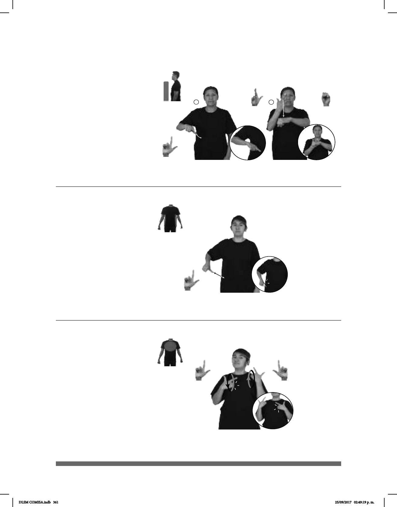

361
(L-63)
Seña: SC: I. SM; II. SB
I. L.1; II. MD
I. Palma hacia abajo;
II. MD palma hacia adentro. MB
palma hacia abajo.
I. La mano inicia a la
altura de la cintura y termina sobre
la cintura; II. La MD inicia a la al-
tura de la cara y termina sobre MB.
MB a la altura del pecho.
I. Recto; II. La MD
golpea la MB en línea recta.
sust. Cada uno de los
jefes del poder ejecutivo de los
estados de una república federal.
Seña: SB
MD y MB L.1
MD y MB palmas hacia
adentro.
MD y MB sobre el pecho.
La MD y la MB se
mueven formando círculos
alternadamente.
Se esboza una
sonrisa.
v. tr. Sentir gusto o placer.
La seña se usa en la
comunidad sorda católica
Seña: SM
L.1
Palma hacia abajo.
Sobre la cintura.
La mano simula
varios saltos.
sust. m. Conjunto de
órganos e instituciones, con
facultades y responsabilidades
determinadas por las leyes, creados
para atender la función pública de
un país.
(L-62)
(L-61)
CONSTRUIR DENTRO ESCUELA PARA ALUMNOS SORDOS GOBERNADOR APOYAR
El gobernador apoyó la construcción de una escuela para alumnos sordos.
GOBIERNO CUIDAR PERSONA
área
El gobierno cuida a los ciudadanos.
pro-YO ESPERAR pro-ÉL GOZAR DIOS
Espero que goce en las manos de Dios.
DLSM COMISA.indb 361 25/09/2017 02:49:19 p. m.